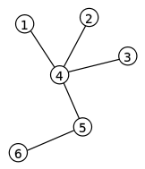
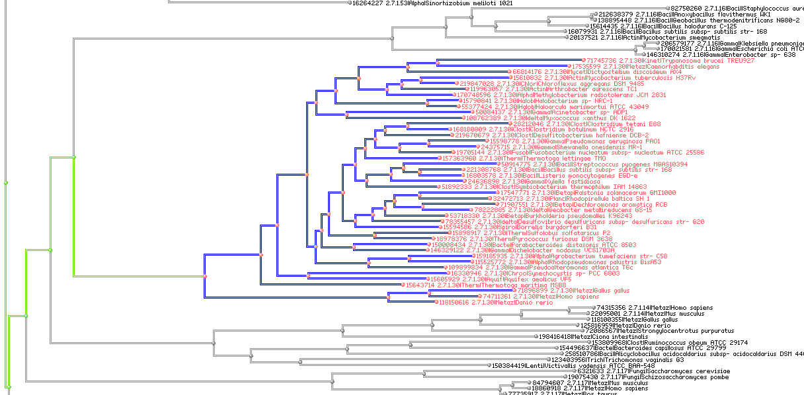

Bit Vector Indexed Trees
 Trees are a widely used as an abstract data type, form of connected acyclic graph, representing sets of nodes and edges. Algorithms and systems working with large trees often need to solve problems with finding paths from one node to another. Since all graphs are very often defined as sets of connected nodes such problems can be solved using set algebraic operations using bit vectors.
As use case lets discuss the problem of finding the common ancestors between nodes.
The straight forward solution to this problem is based on assumption the tree is fully available in memory and all nodes are bi-directionally linked. In this model there is a relatively simple back tracing algorithm, from both nodes, which should synchronize in at the most common ancestor. All nodes up the ancestor – would be our common set of ancestors. While relatively simple for just two nodes, the complexity of the algorithm grows when we need to process many nodes. It is also difficult to make such algorithm parallel which is imperative nowdays.
 Bit vector indexing can help to solve this problem. First, lets assume, that all nodes in our tree being uniquely identified with numbers. This numbers may be or may not be sorted along the topology, this is not very important at this moment. Next step would be to run a variant of back tracing algorithm.
The back tracing algorithm should go for each node where we need to find the ancestry. As a result we would have a set of bit vectors, each describing the ancestry set (but not the ancestry line, since we do not expect the ids to be sorted). The nice way to do it would be to use of "Visitor" Design Pattern, or lamdas, but lets stick to a relatively simple and readable way of reverse iteration.
bm::bvector<> bv;
while (node->parent != 0)
{
unsigned id = node->parent.id;
bv[id] = id; // add node id to the bit set
node = node->parent;
}
Please note, that the calculation of all ancestry sets is embarrassingly parallel problem, all the nodes can be processed as tasks in different threads without syncronization points. In terms of map-reduce – this would be mapping stage.
// this is not legal C++ a pseudo code for clarity
bm::bvector<> common_ancestry_set;
for ( EACH SET )
{
if (first set)
common_ancestry_set = set[i];
else
common_ancestry_set &= set[i];
}
The algorithm above will reduce all the back traced ancestry sets into one common set. The finishing touch may be finding the most common ancestor. This can be done via back-tracing where each back-trace step checks the common ancestry set. The first found is our lowest common ancestor.
unsigned common_parent = 0;
while (node->parent != 0)
{
unsigned id = node->parent.id;
if (common_ancestry_set.test(id))
{
common_parent = id;
break;
}
node = node->parent;
}
This can be done via back-tracing where each back-trace step checks the common ancestry set. The first found is our lowest common ancestor.
The method above illustrates the basic principles of how to use set algebra for tree searches. Combination of set algebraic constructs and traversal algorithms. If we anticipate many requests of this type we would save all the ancestry vectors as an index to avoid back-trace step, which is essentially a bit index creation. BitMagic supports compressed serialization of bit vectors, so index can be stored in a file, or in a database or in memory.
Implementation notes
Graphs very often has characteristics to produce very sparse sets or even embarrassingly sparse sets.
This is where straight bit vectors may become less efficient (memory consumption).
For graphs and trees makes sense to use compressed bit vector mode bm::bvector<> bv(BM_GAP)
which turns use of D_GAP in-memory compression (access penalty is minimal or may actually work faster than plain bit sets).
If memory consumption is an issue (large graphs with in-memory indexing) optimize allocations by calling
bvector<>::optimize_gap_size().
Another option of cause is to use plain sorted vectors of node ids for all or some indexes.
BitMagic library provides interoperability, bvector<> can be combined with vector of integers using
functions bm::combine_and(), bm::combine_and_sorted(), bm::combine_or(), etc.
More.
Needless to say, that STL (if we are working in C++ envelop) provides std::set_intersection() and other set algebraic algorithms. Implementation choice for performance critical applications needs experiment with specific data.
Acknowledgements
- Sample tree visualization produced with NCBI Genome Workbench